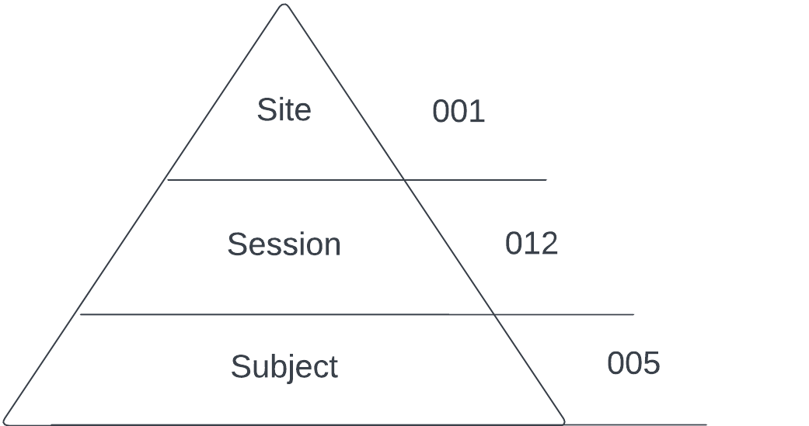
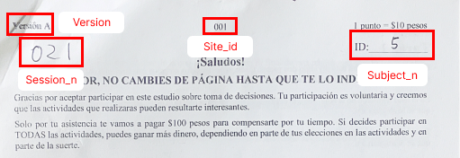
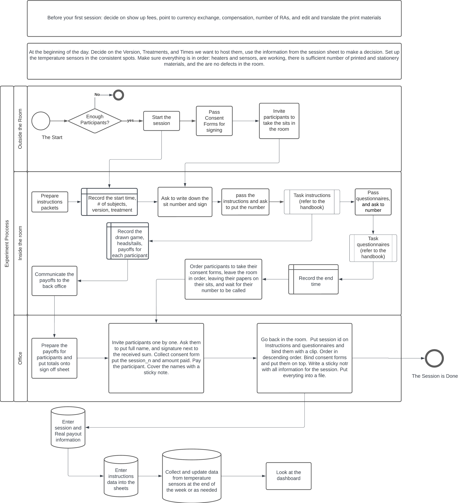

25 Document
Comprehensive documentation is pivotal to the success of any research project, ensuring consistent data collection and adherence to established procedures by field agents. This guide outlines the importance of documenting every process related to sampling, administration, data collection, and handling meticulously, thus laying the foundation for research reproducibility and quality.
Although universally disliked, bureaucracy is undeniably essential!
25.1 Principles of Documentation
A robust documentation system rests on several foundational principles:
- Traceability: Each process step should be traceable.
- Hierarchical structure: Every subordinate unit should be connected to its parent unit.
- Physical accessibility: All relevant information should be physically accessible.
- Consistent formatting: Consistency in visual and semantic format across all documentation units is crucial.
- Ease of implementation: The system should be easy to maintain and implement.
- Convertibility: All documentation should be readily convertible into electronic format.
- Centralization: Documentation should be centralized with minimal ambiguity.
- Redundancy: Key information should be replicated across multiple places or formats.
- Resilience: Documentation should be designed to retain crucial information even in disarray.
25.2 Hierarchical Structure of Documentation
The documentation hierarchy consists of site, session, and subject levels, each defined by unique identifiers and variables. This hierarchy binds all materials and systems, forming the structure of your project.

25.3 Physical Documentation
Consistent formatting and clear question design are essential in physical documents to minimize interpretation variations. Aim to limit paper usage to manage costs and logistics effectively. Essential documents like consent forms, activity packets, instructions, and questionnaires should be provided to each subject at every session’s start. They should carry unique identifiers for efficient tracking of participation agreements, which should be collated post-session for easy reference.
A designated researcher should record session-specific information in a notebook during the session, which aids in completing session-specific fields during data collection.
25.4 Field Journal
Maintaining a field journal to record observations regarding the weather, political climate, experiment rounds, site, and other relevant factors is highly advised.
25.5 Electronic Documentation
All information should be duplicated electronically. After each session, information should be transferred into the electronic session sheet, and documents should be scanned, if possible, to prevent data loss.
25.6 Data Storage and Labeling
For electronic data collection, storage and labeling are mostly automatic. However, for paper-based data collection, careful labeling is crucial.

25.7 Data Entry
Establish a linear, mechanical process for data entry to minimize errors. Standardize the input of multiple choices, NAs, and unaccounted values.
25.8 Sampling Strategy
The sampling strategy should be explicitly outlined, with the methodologies and technologies to be used detailed. Information regarding each location should be documented.
25.9 Marketing
Employ suitable marketing tools to reach a substantial participant base and maintain good relations with the hosting site. The signup process for events should be standardized. Using external services like Eventbrite is recommended.
25.10 Administration
The administration process greatly influences research outcomes. A detailed script for the experimenter should be provided, delineating what needs to be communicated, response to queries, and other influential factors.
On the session day, follow the prescribed procedures to ensure speedy, reliable, and uniform sessions. Be prepared for unexpected situations and ensure they do not compromise the results. Respect the subjects’ free will.
A flowchart can be useful to demonstrate the administrative flow, detailing participant movement, data entry, etc.

25.11 Accounting
Research involves meticulous bookkeeping akin to running a startup. Document all transaction receipts and be diligent with currency conversion. Store these documents in a Google Sheet provided by your organization, scan/take pictures, and upload them to the cloud with names corresponding to the table entry.
25.12 Data Protection, Privacy, and Quality Control
In the digital era, data protection and privacy are paramount. Discuss plans to protect collected data, especially if it includes personal information about the subjects. This could include measures such as anonymizing data, storing it securely, and complying with relevant data protection laws.
While consistency and standardization are important, it’s essential to elaborate on strategies for ensuring data quality. These could include training data collectors, conducting regular checks or audits, and addressing any errors or inconsistencies that arise.
25.13 Data Analysis and Improvement
Planning how the data will be analyzed can influence how you collect and store it, and it’s useful for anyone using your documentation to understand or replicate your experiment. Consider including a section on how you plan to use the results of your experiment to inform future research. This could involve reviewing and reflecting on the experiment, gathering feedback from participants or data collectors, and making improvements for the future.
25.14 Communication
Effective communication is integral to the success of any experiment. Detailed documents should be created providing clear instructions on the use of each component of your experiment’s system.
These documents should include:
- Procedure Manuals: Outlining step-by-step processes for sampling, administration, data collection, and handling in clear, concise language.
- Training Materials: Practical demonstrations of procedures to help your field agents familiarize with the processes before starting data collection.
- Reference Guides: Quick-reference materials summarizing key points from the procedure manuals and training materials.
- Data Entry Guidelines: Providing clear instructions on how to enter data into your electronic system.
- Data Protection Policies: Explaining how personal data will be protected.
- Quality Control Procedures: Outlining strategies for ensuring the quality of the data collected.
- Feedback Mechanisms: Explaining how feedback will be collected and used to improve future research.
By ensuring these documents are readily accessible to your field agents, your experiment can run smoothly, generating high-quality, reproducible data.
A well-documented experiment is the key to successful research. By adhering to these guidelines, you can ensure your research is reproducible, traceable, and of high quality.